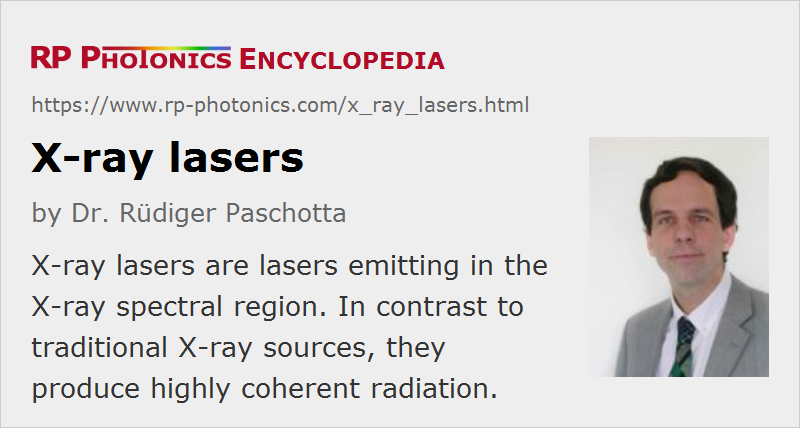

X-ray Lasers
Definition: lasers emitting in the X-ray spectral region
More general terms: lasers
German: Röntgenlaser
How to cite the article; suggest additional literature
Author: Dr. Rüdiger Paschotta
An X-ray laser is a laser device which emits in the spectral region of X-rays, i.e., with wavelengths of only a few nanometers. In this extreme spectral region, traditional laser gain media can not be used. There are different technical approaches:
- The gain medium of a free electron laser is an undulator, through which very high-energy electrons are sent. For a combination of high-electron energy and short undulator period, very short wavelengths are reached [12].
- Optical gain in the X-ray region can also be generated in plasmas, which themselves are typically created with laser beams or with electrical discharges. (The first such lasers were pumped with X-rays from nuclear explosions.) The laser transitions are between excited states of highly charged ions (e.g. Ta45+ for 4.5 nm and Se24+ for 20 nm).
As it is difficult to construct a low-loss laser resonator for such short wavelengths, X-ray lasers are in most cases (particularly for shorter wavelengths) built without a resonator and actually operate as ASE sources (superluminescent sources). This, however, decreases the spatial and temporal coherence. Much higher spatial and temporal coherence as well as an increased output power can be achieved with injection seeding, if a suitable narrow-band seed source is available.
Lasers can also be used in other ways for generating X-rays, in particular with high harmonic generation, which is a kind of nonlinear frequency conversion. The optical power achievable in such high harmonics is fairly low, but it is possible to amplify certain harmonics in a plasma [8, 13].
Suppliers
The RP Photonics Buyer's Guide contains 3 suppliers for X-ray lasers. Among them:
Questions and Comments from Users
Here you can submit questions and comments. As far as they get accepted by the author, they will appear above this paragraph together with the author’s answer. The author will decide on acceptance based on certain criteria. Essentially, the issue must be of sufficiently broad interest.
Please do not enter personal data here; we would otherwise delete it soon. (See also our privacy declaration.) If you wish to receive personal feedback or consultancy from the author, please contact him e.g. via e-mail.
By submitting the information, you give your consent to the potential publication of your inputs on our website according to our rules. (If you later retract your consent, we will delete those inputs.) As your inputs are first reviewed by the author, they may be published with some delay.
Bibliography
| [1] | M. A. Duguay and P. M. Rentzepis, “Some approaches to vacuum UV and X-ray lasers”, Appl. Phys. Lett. 10 (12), 350 (1967), doi:10.1063/1.1728208 |
| [2] | G. C. Baldwin et al., “Approaches to the development of gamma-ray lasers”, Rev. Mod. Phys. 53, 687 (1981), doi:10.1103/RevModPhys.53.687 |
| [3] | M. H. Key, “Laboratory production of X-ray lasers”, Nature 316, 314 (1985), doi:10.1038/316314a0 |
| [4] | D. L. Matthews et al., “Demonstration of a soft X-ray amplifier”, Phys. Rev. Lett. 54 (2), 110 (1985), doi:10.1103/PhysRevLett.54.110 |
| [5] | S. Suckewer et al., “Amplification of stimulated soft-X-ray emission in a confined plasma column”, Phys. Rev. Lett. 55 (17), 1753 (1985), doi:10.1103/PhysRevLett.55.1753 |
| [6] | B. J. MacGowan et al., “Demonstration of X-ray amplifiers near the carbon K edge”, Phys. Rev. Lett. 65 (4), 420 (1990), doi:10.1103/PhysRevLett.65.420 |
| [7] | H. C. Kapteyn, “Photoionization-pumped x-ray lasers using ultrashort-pulse excitation”, Appl. Opt. 31 (24), 4931 (1992), doi:10.1364/AO.31.004931 |
| [8] | T. Ditmire, “Amplification of xuv harmonic radiation in a gallium amplifier”, Phys. Rev. A 51 (6), R4337 (1995), doi:10.1103/PhysRevA.51.R4337 |
| [9] | J. Dunn et al., “Demonstration of X-ray amplification in transient gain nickel-like palladium scheme”, Phys. Rev. Lett. 80 (13), 2825 (1998), doi:10.1103/PhysRevLett.80.2825 |
| [10] | J. J. Rocca, “Table-top soft x-ray lasers”, Rev. Sci. Instrum. 70, 3799 (1999), doi:10.1063/1.1150041 |
| [11] | J. Nilsen, “Reminiscing about the early years of the X-ray laser”, Quantum Electron. 33, 1-2 (2003), doi:10.1070/QE2003v033n01ABEH002356 |
| [12] | W. Ackermann et al., “Operation of a free-electron laser from the extreme ultraviolet to the water window”, Nature Photon. 1, 336 (2007), doi:10.1038/nphoton.2007.76 |
| [13] | Y. Wang et al., “Phase-coherent, injection-seeded, table-top soft-X-ray lasers at 18.9 nm and 13.9 nm”, Nature Photon. 2, 94 (2008), doi:10.1038/nphoton.2007.280 |
| [14] | B. McNeil, “First light from hard X-ray laser”, Nature Photon. 3, 375 (2009), doi:10.1038/nphoton.2009.110; see also: press release from SLAC |
| [15] | F. J. Furch et al., “Demonstration of an all-diode-pumped soft x-ray laser”, Opt. Lett. 34 (21), 3352 (2009), doi:10.1364/OL.34.003352 |
| [16] | D. Alessi et al., “Gain-saturated 10.9 nm tabletop laser operating at 1 Hz repetition rate”, Opt. Lett. 35 (3), 414 (2010), doi:10.1364/OL.35.000414 |
| [17] | O. Guilbaud et al., “Fourier-limited seeded soft x-ray laser pulse”, Opt. Lett. 35 (9), 1326 (2010), doi:10.1364/OL.35.001326 |
| [18] | M. Berrill et al., “Improved beam characteristics of solid-target soft x-ray laser amplifiers by injection seeding with high harmonic pulses”, Opt. Lett. 35 (14), 2317 (2010), doi:10.1364/OL.35.002317 |
| [19] | P. Emma et al., “First lasing and operation of an ångstrom-wavelength free-electron laser”, Nature Photon. 4, 641 (2010), doi:10.1038/nphoton.2010.176 |
| [20] | J. N. Galayda et al., “X-ray free-electron lasers – present and future capabilities”, J. Opt. Soc. Am. B 27 (11), B106 (2010), doi:10.1364/JOSAB.27.00B106 |
| [21] | E. Allaria et al., “Two-stage seeded soft-X-ray free-electron laser”, Nat. Photon. 7, 913 (2013) |
| [22] | Y. Wang et al., “Gain dynamics in a soft-X-ray laser amplifier perturbed by a strong injected X-ray field”, Nature Photon. 8, 381 (2014), doi:10.1038/nphoton.2014.79 |
See also: high harmonic generation, free electron lasers, superluminescent sources
and other articles in the category lasers
|  |
If you like this page, please share the link with your friends and colleagues, e.g. via social media:
These sharing buttons are implemented in a privacy-friendly way!